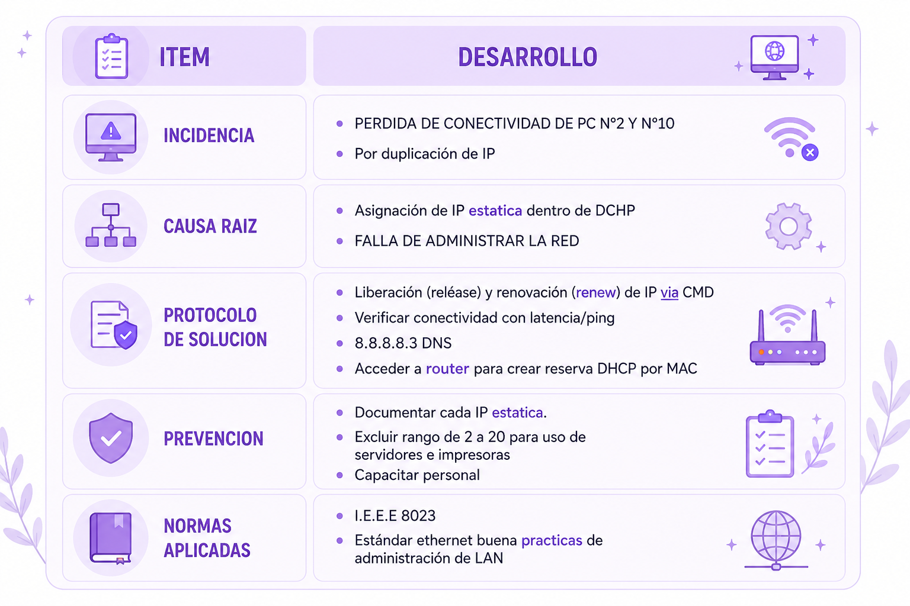

08/05 - ACTIVIDAD 6 REDES Y DIRECCIONAMIENTO
Consigna:
tenemos 15 PC’s en un aula, debemos conectarlas a un router wifi.
PC 10 y PC2 pierden internet , al revisar tienen la misma IP 192.168.1.10
PALABRAS
- LAN (red de área Local): red de computadoras en área limitada
- IP (protocolo de internet): dirección numérica que identifica un dispositivo en una red
- DHCP (Protocolo de Configuración Dinámica de Host): servicio de ROUTER que asigna IP automaticamente
- CONFLICTO IP: cuando 2 pc tienen la misma IP , ninguna tendrá internet
1- Que problema de red ocurrió. Defina conflicto de red. Problema de red: conflicto de ip
DEFINICION: error de red en capa 3 de modelo OSI, que ocurre cuando 2 o mas dispositivos en la misma red LAN usan la misma IP.
El SWITCH no sabe a quien enviarle los paquetes, asi que los dos se quedan sin conexión
2- Explique 2 causas posibles: una relacionada con DHCP y otra con configuración manual
- DHCP: servidor DHCP del router asigno la “1.10” a la PC n2, pero no detecto que ya estaba en uso .
su tiempo expiro mal (leaser time)
- IP MANUAL: alguien configuro la PC n°2 con IP estatica colocando la “1.10”.
y el DHCP también le coloco 1.10 ala N°10 al no detectar su repetición.
3- SOLUCIONES QUE APLICARIA COMO TECNICO:
INMEDIATA:
En PC 10 ejecutar símbolo de sistema y colocar el comando
ipconfig /release (liberar) Libera la IP asignada por DHCP. Y
ipconfig /renew (renovar) Le pide al servidor DHCP una nueva
configuración de red.
DEFINITIVA:
Ingresar al router > ir a configuración de DHCP> Crear una reserva de IP > asociar dirección MAC a IP 192.168.1.10
CUADRO DETALLADO:
